Công cụ này chủ yếu thực hiện đo dung sai cho các tham số sản xuất như độ phẳng, độ tròn, độ thẳng, độ song song, độ vuông góc, độ nghiêng, độ trụ, độ biên dạng đường, độ biên dạng bề mặt, v.v.;
Chủ yếu dùng trong các hạng mục đo sai số kích thước của vật liệu sản xuất.
Trong công cụ này, độ phẳng（độ tròn、độ trụ）chủ yếu có hai chế độ đo. Khi phương pháp lấy phần tử lý tưởng（mặt phẳng、hình tròn、hình trụ）là phương pháp bình phương tối thiểu, công cụ sẽ dựa trên đám mây điểm đầu vào để fit phần tử lý tưởng（mặt phẳng、hình tròn、hình trụ）và tính độ phẳng, độ tròn hoặc độ trụ；khi phương pháp lấy phần tử lý tưởng（mặt phẳng、hình tròn、hình trụ）là người dùng tự định nghĩa, công cụ sẽ dựa trên mặt phẳng chuẩn, hình trụ chuẩn do người dùng nhập để tính độ phẳng, độ tròn hoặc độ trụ.
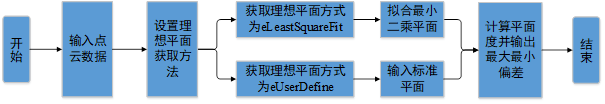
Phương pháp lấy phần tử lý tưởng（mặt phẳng、hình tròn、hình trụ）là phương pháp bình phương tối thiểu
Step1:Thêm file đám mây điểm, công cụ đo dung sai đám mây điểm, sau đó nhấp đúp để mở chuỗi tham số công cụ, liên kết file đám mây điểm, như hình 3-2；
Step2:Công cụ đo dung sai liên kết chuỗi dữ liệu, nhấp chuột phải để mở giao diện thuộc tính nâng cao của công cụ này, thiết lập ROI kiểm tra, sau đó nhấp chạy để tính giá trị dung sai, xem độ phẳng(độ tròn、độ trụ) do công cụ xuất ra trong trang table tự động；
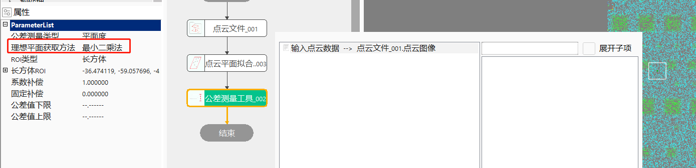
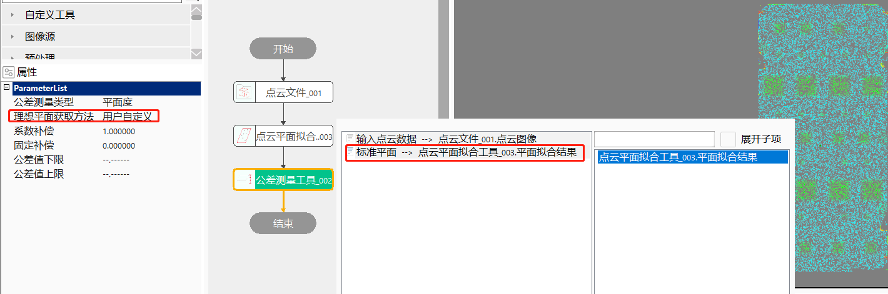
Độ thẳng không ràng buộc
Step1:Thêm file đám mây điểm, công cụ đo dung sai đám mây điểm, sau đó nhấp đúp để mở chuỗi tham số công cụ, liên kết file đám mây điểm, như hình 3-4；
Step2:Công cụ đo dung sai liên kết chuỗi dữ liệu, nhấp chuột phải để mở giao diện thuộc tính nâng cao của công cụ này, thiết lập ROI kiểm tra, sau đó nhấp chạy để nhận độ thẳng của dữ liệu đám mây điểm trong ROI đó, xem độ thẳng do công cụ xuất ra trong trang table tự động；
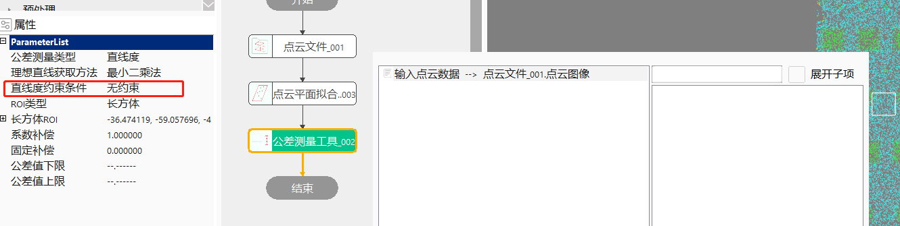
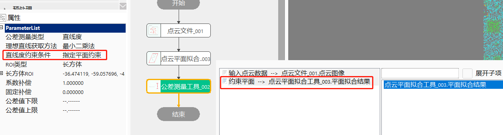
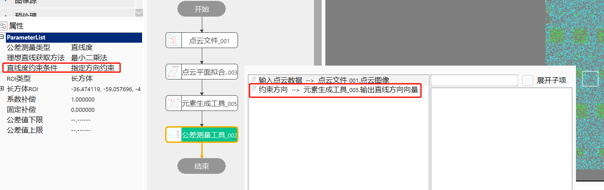
Độ song song đường thẳng dựa trên đường thẳng chuẩn + mặt phẳng chuẩn
Step1:Thêm file đám mây điểm, công cụ tạo phần tử đám mây điểm, công cụ đo dung sai đám mây điểm, sau đó nhấp đúp để mở chuỗi tham số công cụ, liên kết file đám mây điểm, như hình 3-7；
Step2:Trong liên kết dữ liệu, liên kết đường thẳng chuẩn và mặt phẳng chuẩn cần thiết；
Step3:Công cụ đo dung sai liên kết chuỗi dữ liệu, nhấp chuột phải để mở giao diện thuộc tính nâng cao của công cụ này, thiết lập ROI kiểm tra, sau đó nhấp chạy để nhận độ song song của dữ liệu đám mây điểm trong ROI đó. Trong đó, lấy giá trị tuyệt đối của hiệu giữa độ lệch lớn nhất và độ lệch nhỏ nhất chính là độ song song cần tìm；
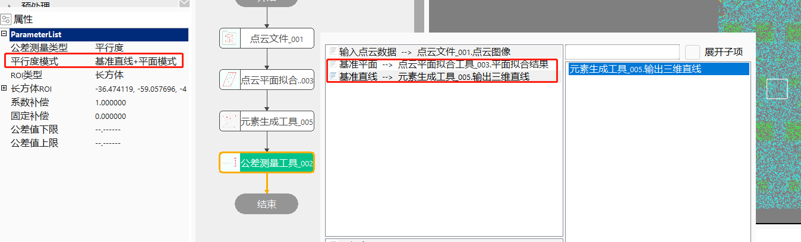
Độ song song đường thẳng dựa trên đường thẳng chuẩn
Step1:Thêm file đám mây điểm, công cụ tạo phần tử đám mây điểm, công cụ đo dung sai đám mây điểm, sau đó nhấp đúp để mở chuỗi tham số công cụ, liên kết file đám mây điểm；
Step2:Trong liên kết dữ liệu, liên kết đường thẳng chuẩn cần thiết；
Step3:Công cụ đo dung sai liên kết chuỗi dữ liệu, nhấp chuột phải để mở giao diện thuộc tính nâng cao của công cụ này, thiết lập ROI kiểm tra, sau đó nhấp chạy để nhận độ song song của dữ liệu đám mây điểm trong ROI đó. Trong đó, lấy giá trị tuyệt đối của hiệu giữa độ lệch lớn nhất và độ lệch nhỏ nhất chính là độ song song cần tìm；
Độ song song mặt phẳng dựa trên mặt phẳng chuẩn
Step1:Thêm file đám mây điểm, công cụ tạo phần tử đám mây điểm, công cụ đo dung sai đám mây điểm, sau đó nhấp đúp để mở chuỗi tham số công cụ, liên kết file đám mây điểm；
Step2:Trong liên kết dữ liệu, liên kết mặt phẳng chuẩn cần thiết；
Step3:Công cụ đo dung sai liên kết chuỗi dữ liệu, nhấp chuột phải để mở giao diện thuộc tính nâng cao của công cụ này, thiết lập ROI kiểm tra, sau đó nhấp chạy để nhận độ song song của dữ liệu đám mây điểm trong ROI đó, xem độ song song do công cụ xuất ra trong trang table tự động；
Đo độ vuông góc kiểu mặt phẳng với chuẩn là mặt phẳng
Step1:Thêm file đám mây điểm, công cụ fit mặt phẳng đám mây điểm, công cụ đo dung sai đám mây điểm, sau đó nhấp đúp để mở chuỗi tham số công cụ, liên kết file đám mây điểm, như hình 3-8；
Step2:Trong liên kết dữ liệu, liên kết mặt phẳng chuẩn cần thiết；
Step3:Công cụ đo dung sai liên kết chuỗi dữ liệu, nhấp chuột phải để mở giao diện thuộc tính nâng cao của công cụ này, thiết lập ROI kiểm tra, sau đó nhấp chạy để nhận độ vuông góc của dữ liệu đám mây điểm trong ROI đó, xem độ vuông góc do công cụ xuất ra trong trang table tự động；
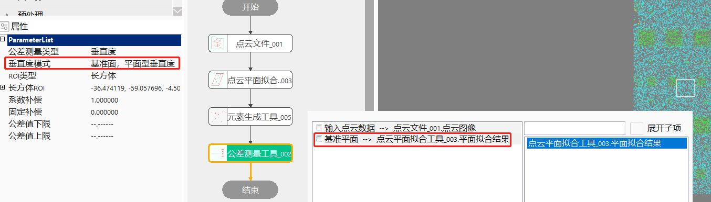
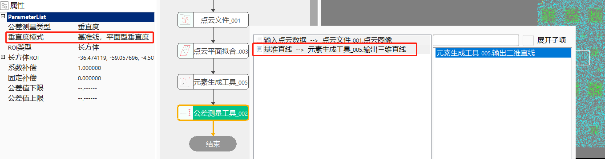
Đo độ vuông góc kiểu hình trụ với chuẩn là mặt phẳng
Step1:Thêm file đám mây điểm, công cụ fit mặt phẳng đám mây điểm, công cụ đo dung sai đám mây điểm, sau đó nhấp đúp để mở chuỗi tham số công cụ, liên kết file đám mây điểm, như hình 3-10；
Step2:Trong liên kết dữ liệu, liên kết mặt phẳng chuẩn cần thiết；
Step3:Công cụ đo dung sai liên kết chuỗi dữ liệu, nhấp chuột phải để mở giao diện thuộc tính nâng cao của công cụ này, thiết lập ROI kiểm tra, sau đó nhấp chạy để nhận độ vuông góc của dữ liệu đám mây điểm trong ROI đó, xem độ vuông góc do công cụ xuất ra trong trang table tự động；
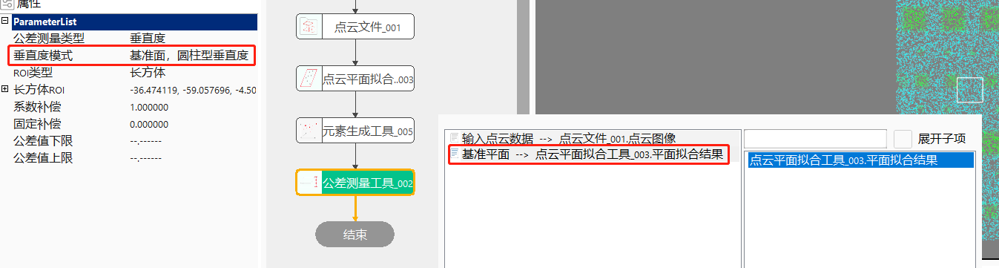
Đo độ nghiêng kiểu mặt phẳng giữa đường với đường （biểu thị đối tượng kiểm tra là đường, chuẩn là đường, vị trí trung tâm là mặt phẳng）
Như hình 3-11, đo độ nghiêng tại vị trí được đánh dấu trên vật liệu này
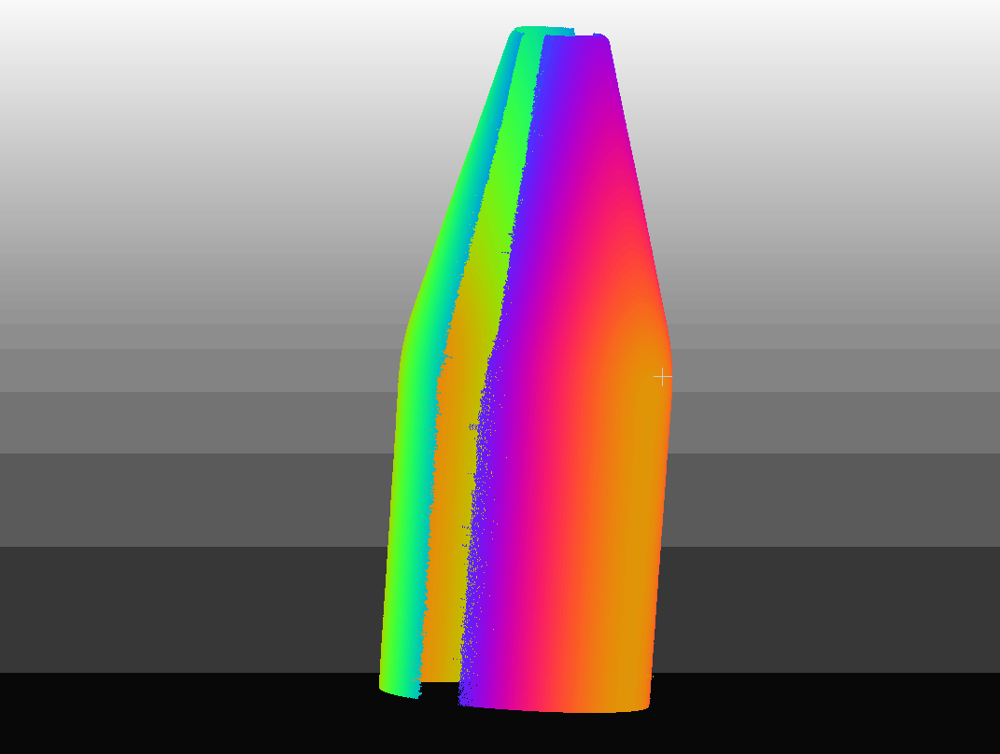
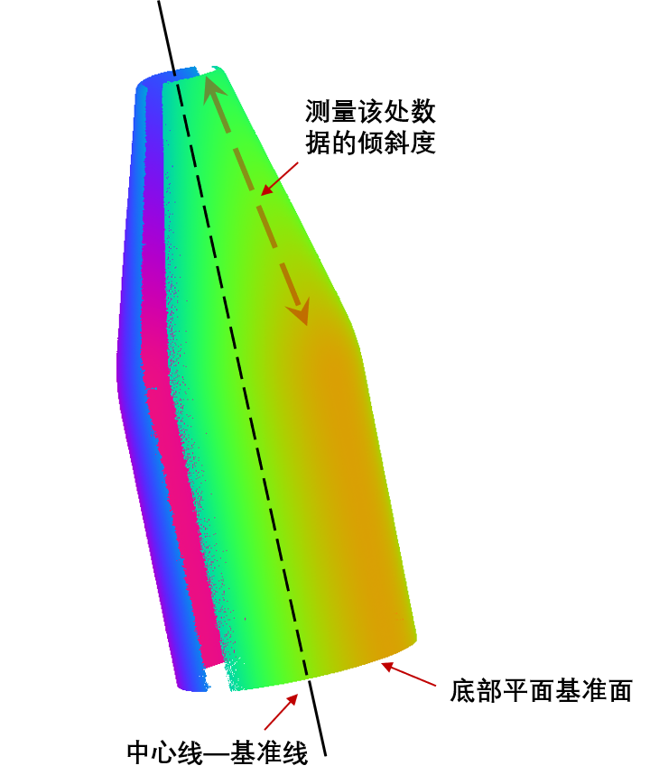
Step1:Thêm file đám mây điểm, công cụ fit mặt phẳng đám mây điểm, công cụ tạo phần tử, công cụ đo dung sai đám mây điểm, sau đó nhấp đúp để mở chuỗi tham số công cụ, liên kết file đám mây điểm, như hình 3-12；
Step2:Thiết lập đường thẳng chuẩn, mặt phẳng chuẩn chiếu và giá trị lý thuyết của độ nghiêng；
Step3:Công cụ đo dung sai liên kết chuỗi dữ liệu, nhấp chuột phải để mở giao diện thuộc tính nâng cao của công cụ này, thiết lập ROI kiểm tra, sau đó nhấp chạy để nhận độ nghiêng của dữ liệu đám mây điểm trong ROI đó, xem độ nghiêng do công cụ xuất ra trong trang table tự động；
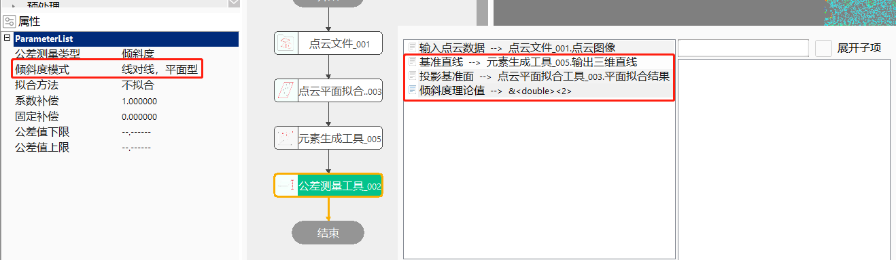
Đo độ nghiêng kiểu mặt phẳng giữa mặt với mặt（biểu thị đối tượng kiểm tra là mặt, chuẩn là mặt, vị trí trung tâm là mặt phẳng）
Bật vector pháp tuyến （các điểm dữ liệu trong tập điểm chuẩn đầu vào bắt buộc phải chứa vector pháp tuyến）
Step1:Thêm file đám mây điểm, công cụ fit mặt phẳng đám mây điểm, công cụ tạo phần tử, công cụ đo dung sai đám mây điểm, sau đó nhấp đúp để mở chuỗi tham số công cụ, liên kết file đám mây điểm, như hình 3-13；
Step2:Trong liên kết dữ liệu, liên kết tập điểm chuẩn；
Step3:Nhấp chạy để nhận độ biên dạng, xem độ biên dạng do công cụ xuất ra trong trang table tự động；
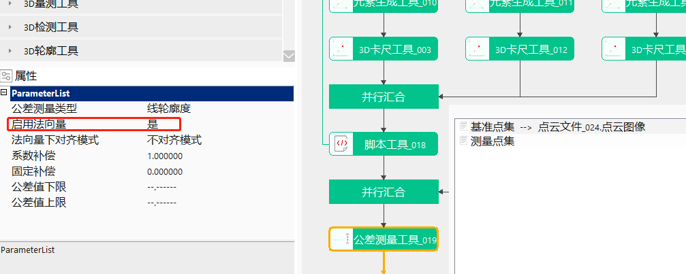
| Tên tham số | Mô tả tham số |
|---|---|
| Mặt phẳng chuẩn | Sử dụng khi loại đo là độ phẳng |
| Hình tròn chuẩn | Sử dụng khi loại đo là độ tròn và ở chế độ người dùng tự định nghĩa |
| Đường thẳng chuẩn | Sử dụng khi loại đo là độ thẳng và ở chế độ người dùng tự định nghĩa |
| Mặt phẳng ràng buộc | Sử dụng khi loại đo là độ thẳng và điều kiện ràng buộc độ thẳng là ràng buộc mặt phẳng chỉ định |
| Hướng ràng buộc | Sử dụng khi loại đo là độ thẳng và điều kiện ràng buộc độ thẳng là ràng buộc hướng chỉ định |
| Hình trụ chuẩn | Sử dụng khi loại đo là độ trụ và ở chế độ người dùng tự định nghĩa |
| Mặt phẳng chuẩn | Sử dụng khi loại đo là độ tròn và không ở chế độ người dùng tự định nghĩa Sử dụng khi loại đo là độ song song ở chế độ đường thẳng chuẩn + mặt phẳng chuẩn, chế độ mặt phẳng chuẩn Sử dụng khi loại đo là độ vuông góc ở chế độ mặt phẳng chuẩn, độ vuông góc kiểu mặt phẳng và mặt phẳng chuẩn, độ vuông góc kiểu hình trụ Sử dụng khi loại đo là độ nghiêng ở chế độ đường với mặt, kiểu mặt phẳng và mặt với mặt, kiểu mặt phẳng |
| Đường thẳng chuẩn | Sử dụng khi loại đo là độ song song ở chế độ đường thẳng chuẩn + mặt phẳng chuẩn, chế độ đường thẳng chuẩn Sử dụng khi loại đo là độ vuông góc ở chế độ đường thẳng chuẩn, độ vuông góc kiểu mặt phẳng Sử dụng khi loại đo là độ nghiêng ở chế độ đường với đường, kiểu mặt phẳng và mặt với đường, kiểu mặt phẳng |
| Mặt phẳng chuẩn chiếu | Sử dụng khi loại đo là độ nghiêng và phương pháp fit chọn không fit |
| Mặt phẳng chuẩn 1/2 | Sử dụng khi loại đo là độ nghiêng ở chế độ đường với mặt, kiểu hình trụ（biểu thị đối tượng kiểm tra là đường, chuẩn là mặt, vị trí trung tâm là trục hình trụ） |
| Giá trị lý thuyết của độ nghiêng | Sử dụng khi loại đo là độ nghiêng |
| Tập điểm chuẩn | Sử dụng khi loại đo là độ biên dạng đường/độ biên dạng bề mặt |
| Tập điểm đo | Sử dụng khi loại đo là độ biên dạng đường/độ biên dạng bề mặt |
| Tên tham số | Mô tả tham số |
|---|---|
| Loại đo dung sai | Bao gồm：độ phẳng、độ tròn、độ thẳng、 độ song song、 độ vuông góc、 độ nghiêng、 độ trụ、độ biên dạng đường、độ biên dạng bề mặt |
| Phương pháp lấy mặt phẳng lý tưởng | Chỉ phương pháp fit mặt phẳng, bao gồm：phương pháp bình phương tối thiểu、phương pháp bao hàm nhỏ nhất、người dùng tự định nghĩa |
| Phương pháp lấy hình tròn lý tưởng | Bao gồm：phương pháp bình phương tối thiểu、phương pháp bao hàm nhỏ nhất、phương pháp ngoại tiếp nhỏ nhất、phương pháp nội tiếp lớn nhất、người dùng tự định nghĩa |
| Hình dạng đám mây điểm | Bao gồm：hình tròn(mặc định)、cung tròn hoặc đường cong、hình elip、phân tán；có hiệu lực khi phương pháp lấy hình tròn lý tưởng là phương pháp nội tiếp lớn nhất |
| Phương pháp lấy đường thẳng lý tưởng | Bao gồm：phương pháp bình phương tối thiểu、phương pháp bao hàm nhỏ nhất、người dùng tự định nghĩa |
| Điều kiện ràng buộc độ thẳng | Bao gồm：không ràng buộc(tương ứng vùng dung sai là vùng hình trụ)、ràng buộc mặt phẳng chỉ định(tương ứng vùng dung sai là vùng giữa hai đường thẳng song song trong mặt phẳng chỉ định)、ràng buộc hướng chỉ định(tương ứng vùng dung sai là vùng giữa hai mặt phẳng song song theo hướng cho trước） |
| Chế độ độ song song | Bao gồm：chế độ đường thẳng chuẩn + mặt phẳng chuẩn、chế độ đường thẳng chuẩn、chế độ mặt phẳng chuẩn |
| Chế độ độ vuông góc | Bao gồm：mặt phẳng chuẩn, độ vuông góc kiểu mặt phẳng、đường thẳng chuẩn, độ vuông góc kiểu mặt phẳng、mặt phẳng chuẩn, độ vuông góc kiểu hình trụ |
| Chế độ độ nghiêng | Bao gồm：đường với đường, kiểu mặt phẳng（biểu thị đối tượng kiểm tra là đường, chuẩn là đường, vị trí trung tâm là mặt phẳng）、 đường với mặt, kiểu mặt phẳng（biểu thị đối tượng kiểm tra là đường, chuẩn là mặt, vị trí trung tâm là mặt phẳng）、 đường với mặt, kiểu hình trụ（biểu thị đối tượng kiểm tra là đường, chuẩn là mặt, vị trí trung tâm là trục hình trụ）、 mặt với đường, kiểu mặt phẳng（biểu thị đối tượng kiểm tra là mặt, chuẩn là đường, vị trí trung tâm là mặt phẳng）、 mặt với mặt, kiểu mặt phẳng（biểu thị đối tượng kiểm tra là mặt, chuẩn là mặt, vị trí trung tâm là mặt phẳng） |
| Phương pháp fit | Tham số trong độ nghiêng, bao gồm：không fit, lúc này cần thiết lập mặt phẳng chuẩn chiếu、fit bình phương tối thiểu |
| Phương pháp lấy hình trụ lý tưởng | Bao gồm：phương pháp bình phương tối thiểu、phương pháp bao hàm nhỏ nhất、người dùng tự định nghĩa（do người dùng nhập hình trụ chuẩn） |
| Bật vector pháp tuyến | Khi bật vector pháp tuyến, tập điểm chuẩn cần có sẵn vector pháp tuyến |
| Chế độ căn chỉnh khi có vector pháp tuyến | Kích thước tập điểm chuẩn và tập điểm đo không nhỏ hơn 2, tập điểm chuẩn cần có vector pháp tuyến. Chế độ căn chỉnh bao gồm：chế độ không căn chỉnh, tức là trực tiếp tính độ biên dạng của điểm danh nghĩa và điểm thực tế、chế độ bình phương tối thiểu、chế độ bình phương tối thiểu theo vector、chế độ min-max、chế độ min-max theo vector |
| Chế độ căn chỉnh khi không có vector pháp tuyến | Kích thước tập điểm chuẩn và tập điểm đo không nhỏ hơn 2, tập điểm chuẩn không cần có vector pháp tuyến. Chế độ căn chỉnh bao gồm：chế độ không căn chỉnh、chế độ bình phương tối thiểu、chế độ min-max |
| Chế độ căn chỉnh độ biên dạng bề mặt khi có vector pháp tuyến | Kích thước tập điểm chuẩn và tập điểm đo không nhỏ hơn 7，, tập điểm chuẩn cần có vector pháp tuyến. Chế độ căn chỉnh bao gồm：chế độ không căn chỉnh（trực tiếp tính độ biên dạng của điểm danh nghĩa và điểm thực tế）、chế độ bình phương tối thiểu、chế độ bình phương tối thiểu theo vector、chế độ min-max、chế độ min-max theo vector、chế độ min-max tối ưu toàn cục、chế độ min-max theo vector tối ưu toàn cục |
| Chế độ căn chỉnh độ biên dạng bề mặt khi không có vector pháp tuyến | Kích thước tập điểm chuẩn và tập điểm đo không nhỏ hơn 7，, tập điểm chuẩn không cần có vector pháp tuyến. Chế độ căn chỉnh bao gồm：chế độ không căn chỉnh（trực tiếp tính độ biên dạng của điểm danh nghĩa và điểm thực tế）、chế độ bình phương tối thiểu、chế độ min-max tối ưu toàn cục |
| Loại ROI | Chỉ loại ROI, bao gồm：hình hộp chữ nhật、hình cầu |
| Bù hệ số | Nhân giá trị độ phẳng tính được với hệ số, phạm vi giá trị là [-1000000, 1000000] |
| Bù cố định | Bù cho giá trị độ phẳng tính được, phạm vi giá trị là [-1000000, 1000000] |
| Giới hạn trên/dưới của giá trị dung sai | Thiết lập giá trị giới hạn trên và dưới của dung sai, phạm vi giá trị là [-1000000, 1000000], và giới hạn dưới phải nhỏ hơn hoặc bằng giới hạn trên |
Tham số của giao diện nâng cao giống với tham số của cửa sổ thuộc tính, các nút tương tác như sau：
| Tên nút | Mô tả tham số |
|---|---|
| Vẽ ROI | Trong hình ảnh của giao diện nâng cao, nhấp và kéo chuột tại vị trí tương ứng để vẽ ROI |
| Tên tham số | Mô tả tham số |
|---|---|
| Kết quả fit mặt phẳng | Xuất mặt phẳng đã fit |
| Kết quả fit độ tròn | Xuất hình tròn đã fit |
| Kết quả fit độ thẳng | Xuất độ thẳng đã fit |
| Độ trụ | Xuất hình trụ đã fit |
| Kết quả đo dung sai（độ phẳng/độ tròn/độ thẳng, v.v.） | Kết quả đo dung sai |
| Độ lệch nhỏ nhất | Giá trị độ lệch nhỏ nhất |
| Độ lệch lớn nhất | Giá trị độ lệch lớn nhất |
| Tên tham số | Mô tả tham số |
|---|---|
| Kết quả fit mặt phẳng | Điểm mặt phẳng, điểm mà mặt phẳng fit đi qua Vector pháp tuyến, vector pháp tuyến của mặt phẳng fit Độ lệch, độ lệch của mặt phẳng fit so với mặt phẳng 0 Góc nghiêng, góc giữa vector pháp tuyến của mặt phẳng fit và trục Z Góc xoay, góc giữa vector chiếu của vector pháp tuyến mặt phẳng fit lên mặt phẳng XOY và trục X |
| Kết quả fit độ tròn | Kết quả fit độ tròn：tâm tròn, tọa độ ba chiều của tâm hình tròn được fit từ dữ liệu đám mây điểm Kết quả fit độ tròn：vector pháp tuyến, vector pháp tuyến của mặt phẳng chứa hình tròn được fit từ dữ liệu đám mây điểm Kết quả fit độ tròn：bán kính, bán kính của hình tròn được fit từ dữ liệu đám mây điểm, đơn vị：mm |
| Kết quả fit độ thẳng | Kết quả fit độ thẳng：StarPoint, điểm bắt đầu của đường thẳng fit Kết quả fit độ thẳng：EndPoint, điểm kết thúc của đường thẳng fit Kết quả fit độ thẳng：Direction, hướng của đường thẳng fit Kết quả fit độ thẳng：Tilt, góc nghiêng, góc giữa vector hướng của đường thẳng fit và chiều dương trục Z Kết quả fit độ thẳng：Rotation, góc xoay, góc giữa vector chiếu của vector hướng đường thẳng fit lên mặt phẳng XOY và trục X |
| Độ trụ | Hình trụ：Pos, tọa độ ba chiều của vị trí tâm hình trụ Hình trụ：Normal, hướng vector pháp tuyến của mặt đáy hình trụ Hình trụ：Radius, bán kính hình tròn trong hình trụ |
| Kết quả đo dung sai（độ phẳng/độ tròn/độ thẳng, v.v.） | Kết quả đo dung sai |
| Ma trận biến đổi cứng | Xuất ma trận chuyển đổi giữa tập điểm đo và tập điểm chuẩn trong độ biên dạng bề mặt |
| Độ lệch nhỏ nhất | Giá trị độ lệch nhỏ nhất |
| Độ lệch lớn nhất | Giá trị độ lệch lớn nhất |
| Kết quả thực thi | Kết quả thực thi công cụ |
| Thời gian thực thi | Thời gian thực thi công cụ |
Tham khảo “\Samples\3D\点云\公差测量工具.gvp”.
1、Độ phẳngkiểm soát：giới hạn dung sai hình học cho sai số không phẳng cho phép của một bề mặt.
Vùng dung sai độ phẳng：hai mặt phẳng song song, tất cả phần tử nằm giữa chúng. Mặt phẳng thứ nhất của vùng dung sai được tạo bởi ba điểm cao nhất trên bề mặt được kiểm soát, mặt phẳng thứ hai là mặt phẳng song song lệch khỏi mặt phẳng thứ nhất một khoảng bằng giá trị dung sai kiểm soát. Như hình 7-1, vùng dung sai độ phẳng là hai mặt phẳng song song cách nhau 0.2mm；
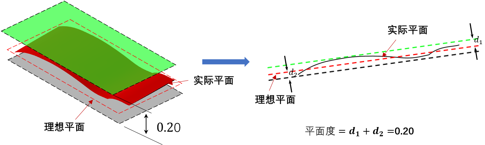
2、Độ trònsai số：lượng biến động của đường bao trên mặt cắt vuông góc với trục của vật thể quay so với hình tròn lý tưởng, như hình 7-2；
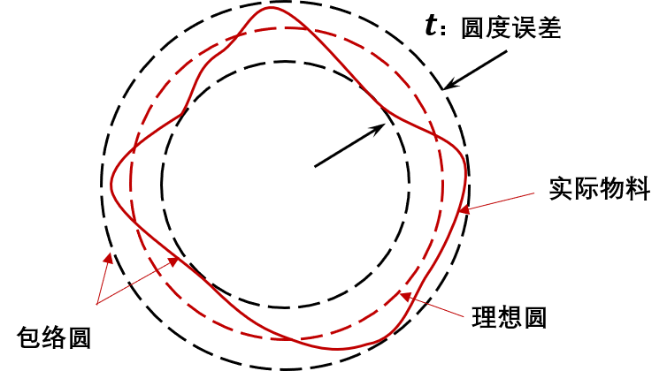
3、Độ thẳnglà trạng thái biểu thị phần tử đường thẳng trên chi tiết duy trì đường thẳng lý tưởng, tức mức độ thẳng thường nói. Dung sai độ thẳng là lượng biến động lớn nhất được phép của đường thực tế so với đường thẳng lý tưởng；thuật toán đo dung sai của Luster LightTech hỗ trợ ba loại dung sai được quy định trong GB/T1182-2018（tức loại dung sai không ràng buộc, loại dung sai ràng buộc theo mặt phẳng và loại dung sai ràng buộc theo hướng）.
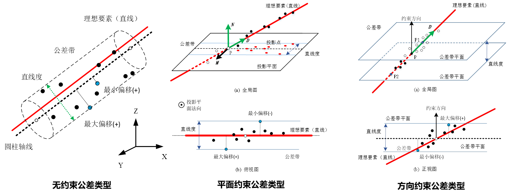
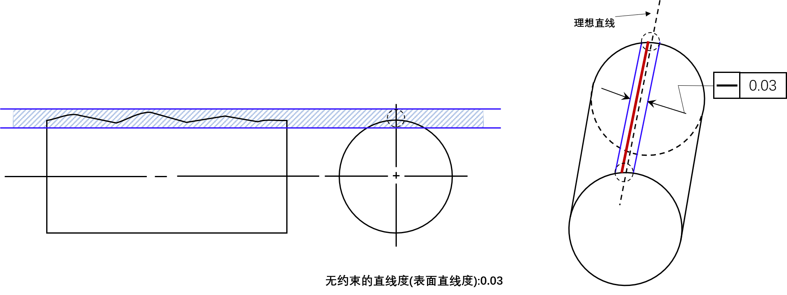
Độ thẳng không ràng buộc：nhập dữ liệu đám mây điểm, lấy đường thẳng lý tưởng, tính vùng dung sai hình trụ của đám mây điểm, từ đó tính độ thẳng và lượng lệch lớn nhất/nhỏ nhất；
Độ thẳng ràng buộc theo mặt phẳng：nhập dữ liệu đám mây điểm, lấy đường thẳng lý tưởng, chiếu đám mây điểm và đường thẳng lên mặt phẳng chỉ định, tính độ thẳng và lượng lệch lớn nhất/nhỏ nhất trong mặt phẳng；
Độ thẳng ràng buộc theo hướng：nhập dữ liệu đám mây điểm, lấy đường thẳng lý tưởng, tính khoảng cách giới hạn của đám mây điểm theo hướng chỉ định, từ đó tính độ thẳng và lượng lệch lớn nhất/nhỏ nhất；
4、Độ song songsai số là lượng biến động của phần tử thực tế được đo so với phần tử lý tưởng song song với chuẩn. Phép đo độ song song bao gồm đo độ song song mặt với mặt, đường với đường. Các phương pháp đo chủ yếu gồm phương pháp so sánh trực tiếp, phương pháp tọa độ, phương pháp sai lệch kích thước, phương pháp thước thủy và phương pháp trục quang. Đồng thời, độ song song là việc một bề mặt, đường tâm/mặt tâm song song chính xác với một chuẩn. Chỉ biểu thị hướng, không xác định vị trí. Độ song song là dung sai định hướng.
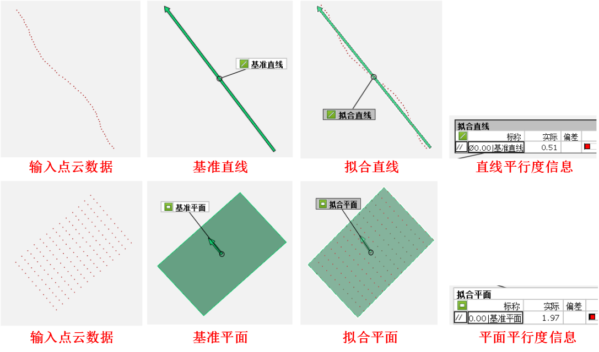
Trong công cụ đo dung sai, độ song song có 3 hình thức tính toán：
Nguyên lý tính độ song song đường thẳng dựa trên đường thẳng chuẩn + mặt phẳng chuẩn：chiếu dữ liệu đám mây điểm và đường thẳng chuẩn lên mặt phẳng chuẩn, tính tổng khoảng cách lớn nhất từ các điểm dữ liệu chiếu ở phía trên đường chiếu và khoảng cách lớn nhất ở phía dưới đường thẳng, làm độ song song của dữ liệu đám mây điểm. Sơ đồ nguyên lý như hình 7_5.
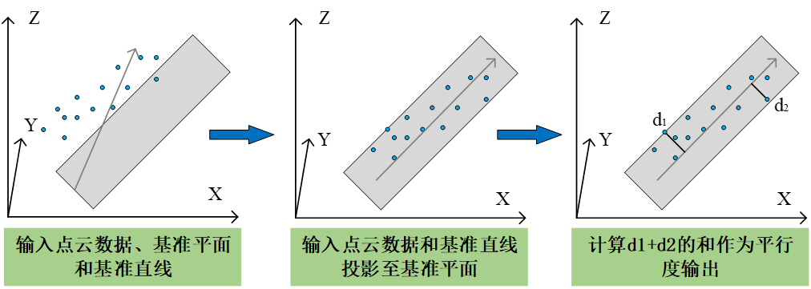
Nguyên lý tính độ song song đường thẳng dựa trên đường thẳng chuẩn：lấy vector hướng của đường thẳng chuẩn làm điều kiện ràng buộc để lấy đường thẳng fit của dữ liệu đám mây điểm, dựa trên hướng của đường thẳng fit để lấy hình trụ ngoại tiếp nhỏ nhất của dữ liệu đám mây điểm, lấy đường kính của hình tròn nơi hình trụ ngoại tiếp nhỏ nhất nằm làm độ song song của dữ liệu đám mây điểm. Sơ đồ nguyên lý như hình 7_6.
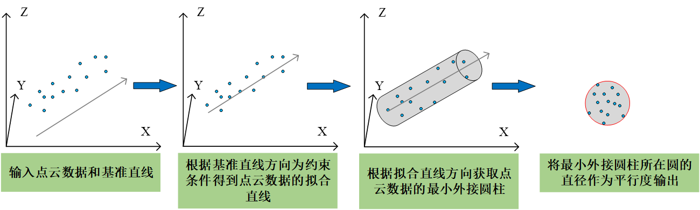
Nguyên lý tính độ song song mặt phẳng dựa trên mặt phẳng chuẩn：lấy hướng vector pháp tuyến của mặt phẳng chuẩn làm điều kiện ràng buộc để lấy mặt phẳng fit của dữ liệu đám mây điểm, tính tổng giá trị lớn nhất của dữ liệu đám mây điểm phía trên mặt phẳng fit và giá trị lớn nhất phía dưới mặt phẳng fit, làm độ song song của dữ liệu đám mây điểm. Sơ đồ nguyên lý như hình 7_7.
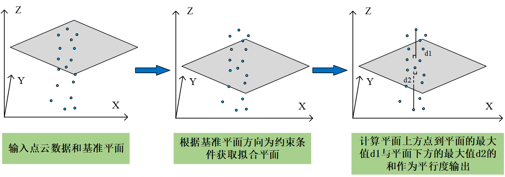
5、Độ vuông góc：biểu thị mức độ biến động của phần tử đường, bề mặt, mặt phẳng tâm, mặt phẳng tiếp tuyến hoặc trục so với chuẩn theo hướng góc cơ bản 90°（vuông góc）.
Mặt phẳng chuẩn, kiểu mặt phẳng：như hình 7_8, chiếu đám mây điểm tương ứng với phần tử được đo theo hướng pháp tuyến của mặt phẳng chuẩn lên mặt phẳng, tính khoảng cách bao hàm nhỏ nhất d của các điểm chiếu, làm độ vuông góc.
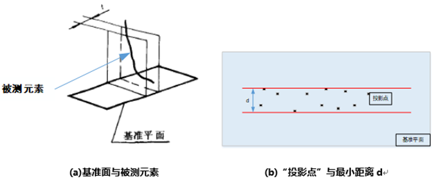
Đường thẳng chuẩn, kiểu mặt phẳng：như hình 7_9, tâm của đám mây điểm tương ứng với phần tử được đo và hướng đường thẳng chuẩn tạo thành mặt phẳng tâm, tính khoảng cách lớn nhất và nhỏ nhất d1、d2 từ đám mây điểm đến mặt phẳng tâm, lấy d1-d2 làm độ vuông góc.
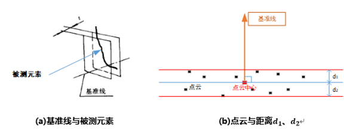
Mặt phẳng chuẩn, kiểu hình trụ：như hình 7_10, chiếu đám mây điểm tương ứng với phần tử được đo theo hướng pháp tuyến của mặt phẳng chuẩn lên mặt phẳng chuẩn, tính đường kính hình tròn ngoại tiếp nhỏ nhất d của các điểm chiếu, làm độ vuông góc.
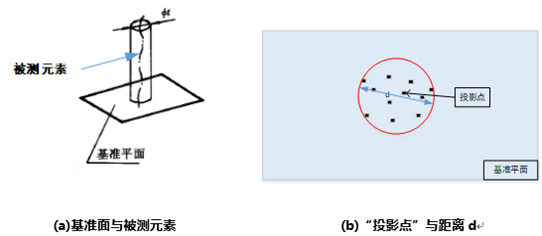
6、Độ nghiêng：chỉ trường hợp một mặt phẳng（hoặc một trục）tạo thành một góc nghiêng nhất định so với một mặt phẳng（hoặc một trục）khác, quan hệ nghiêng này được ràng buộc bằng một giá trị dung sai；trong khái niệm độ nghiêng cần chú ý rằng đối tượng đánh giá độ nghiêng và chuẩn đều có thể là mặt phẳng hoặc trục. Hình dạng vùng dung sai của độ nghiêng có thể là hai mặt phẳng song song, cũng có thể là vùng dung sai hình trụ, cụ thể phụ thuộc vào phần tử được đo là gì, đồng thời cũng phụ thuộc độ nghiêng theo hướng nhìn nào；dung sai độ nghiêng có ba yếu tố chính：góc danh nghĩa, chuẩn tham chiếu và giá trị dung sai. Góc danh nghĩa còn gọi là góc tham chiếu, chỉ góc lý thuyết của phần tử được đo so với chuẩn, phải là một kích thước góc；chuẩn tham chiếu chỉ độ nghiêng của phần tử được đo là so với chuẩn nào；giá trị dung sai là kích thước của vùng dung sai độ nghiêng, khoảng cách giữa các mặt phẳng song song của vùng dung sai hoặc đường kính vùng dung sai hình trụ, vì vậy giá trị dung sai là một kích thước, không phải góc, cần phân biệt với góc danh nghĩa phía trên.
Trên thực tế, độ vuông góc và độ song song là các dạng đặc biệt của độ nghiêng, cách gọi của ba loại này là giống nhau. Độ nghiêng có thể được xem là nhóm chính trong kiểm soát định hướng, độ vuông góc và độ song song được dẫn xuất từ độ nghiêng, tức là độ nghiêng không kiểm soát hai góc định hướng đặc biệt 90°（vuông góc）và 0°（song song）. Độ nghiêng ràng buộc dung sai của mặt, mặt tâm hoặc trục so với một mặt phẳng chuẩn, mặt tâm chuẩn hoặc trục chuẩn theo một góc nghiêng nhất định（lưu ý kích thước góc được kiểm soát bởi độ nghiêng liên hợp ở đây là một kích thước danh nghĩa）. Nếu có dung sai kích thước cùng ràng buộc, dung sai độ nghiêng thường được dùng làm yêu cầu siết chặt cho kiểm soát vị trí. Vùng dung sai độ nghiêng thường là hai mặt phẳng song song có khoảng cách giá trị dung sai quy định, cũng có trường hợp là vùng dung sai mặt trụ, và cần nhiều hơn một chuẩn để định vị. Vùng dung sai này cũng có thể được tạo bởi hai đường thẳng song song, đồng thời trong khung kiểm soát dung sai ghi rõ là “mỗi phần tử đường”. Dù là phương thức nào ở trên, giá trị góc của vùng dung sai định hướng bắt buộc phải là một kích thước danh nghĩa（không có dung sai）.
Trong công cụ đo dung sai, phương pháp đo độ nghiêng có tổng cộng 5 chế độ：
Đường với đường, kiểu mặt phẳng：độ nghiêng kiểu mặt phẳng có đối tượng kiểm tra là đường, chuẩn là đường. Theo tiêu chuẩn quốc gia “đường được đo phải được chiếu lên mặt phẳng chứa trục chuẩn và song song với trục được đo, vùng dung sai là đối với đường được chiếu lên mặt phẳng đó”. Như hình 7_11, vùng dung sai là hai mặt phẳng tương ứng với khoảng cách t；
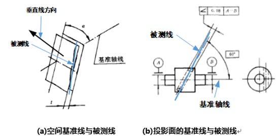
Đường với mặt, kiểu mặt phẳng：độ nghiêng kiểu mặt phẳng có đối tượng kiểm tra là đường, chuẩn là mặt；
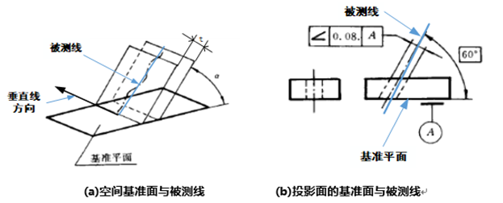
Đường với mặt, kiểu hình trụ：độ nghiêng kiểu hình trụ có đối tượng kiểm tra là đường, chuẩn là mặt；
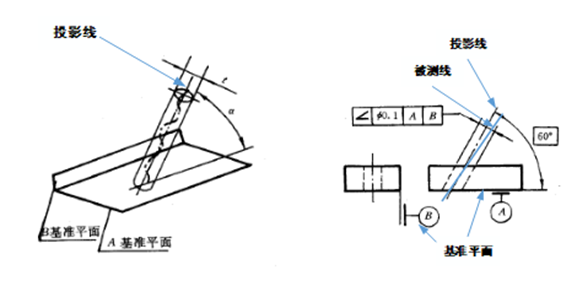
Mặt với đường, kiểu mặt phẳng：độ nghiêng kiểu mặt phẳng có đối tượng kiểm tra là mặt, chuẩn là đường；
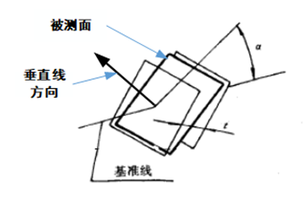
Mặt với mặt, kiểu mặt phẳng：độ nghiêng kiểu mặt phẳng có đối tượng kiểm tra là mặt, chuẩn là mặt；
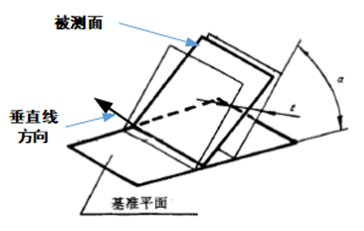
Lưu ý：góc a là góc lý thuyết đúng được chỉ định, khoảng cách t là giá trị độ nghiêng đạt yêu cầu được chỉ định bởi vùng dung sai；
7、Độ trụchỉ lượng biến động của hình trụ thực tế so với hình trụ lý tưởng, dùng để đánh giá sai số hình dạng của hình trụ thực tế. Vùng dung sai độ trụ là vùng giữa hai hình trụ đồng trục, độ trụ chủ yếu được dùng trong giai đoạn đo đám mây điểm 3D.
Bình phương tối thiểu：tổng bình phương khoảng cách từ điểm đến bề mặt hình trụ fit là nhỏ nhất；
Bao hàm nhỏ nhất：hiệu giữa khoảng cách lớn nhất và khoảng cách nhỏ nhất từ điểm đến bề mặt hình trụ fit là nhỏ nhất；
8、Độ biên dạng đườngtrước tiên chiếu đám mây điểm đầu vào theo hướng chiếu thành điểm 2D, sau đó căn chỉnh đám mây điểm đo với đám mây điểm danh nghĩa theo bốn chế độ căn chỉnh：bình phương tối thiểu, bình phương tối thiểu theo vector, min-max và min-max theo vector. Trong đó, căn chỉnh bình phương tối thiểu và bình phương tối thiểu theo vector sẽ tối thiểu hóa tổng chênh lệch khoảng cách giữa đám mây điểm đo và đám mây điểm danh nghĩa；min-max và min-max theo vector sẽ tối thiểu hóa khoảng cách lớn nhất giữa đám mây điểm đo và đám mây điểm danh nghĩa. Sau khi căn chỉnh đám mây điểm, lấy 2 lần giá trị lớn nhất của khoảng cách pháp tuyến giữa đám mây điểm đo và đám mây điểm danh nghĩa làm giá trị độ biên dạng đường cuối cùng xuất ra.
Bình phương tối thiểu：chế độ thường dùng nhất, thực hiện căn chỉnh tập điểm theo nguyên tắc tối thiểu hóa tổng bình phương khoảng cách giữa tập điểm đo và tập điểm danh nghĩa, thường dùng cho các đặc trưng có hình dạng quy tắc như hình tròn, hình trụ, v.v., không phù hợp với đặc trưng có hình dạng phức tạp như bề mặt cong, v.v.；
Bình phương tối thiểu theo vector：tương tự bình phương tối thiểu, khác biệt là khoảng cách ở đây là khoảng cách vector được chiếu lên vector pháp tuyến danh nghĩa, phù hợp với hình tròn, hình trụ hoặc các bề mặt cong phức tạp, v.v.；
Min-max：tối thiểu hóa khoảng cách lớn nhất trong tập điểm đo và tập điểm danh nghĩa, chế độ này dễ bị ảnh hưởng bởi nhiễu, không phù hợp với bề mặt cong phức tạp, nhưng giá trị độ biên dạng tính được nhỏ hơn bình phương tối thiểu, phù hợp với định nghĩa độ biên dạng；
Min-max theo vector：tương tự loại min-max, ở đây tối thiểu hóa khoảng cách chiếu lớn nhất（theo hướng vector）trong tập điểm đo và tập điểm danh nghĩa, giá trị độ biên dạng tính được nhỏ hơn bình phương tối thiểu theo vector, nhưng bị ảnh hưởng bởi nhiễu tương đối lớn.
9、Độ biên dạng bề mặt:tính toán dựa trên đám mây điểm 3D, căn chỉnh đám mây điểm đo với đám mây điểm danh nghĩa theo sáu chế độ căn chỉnh：bình phương tối thiểu, bình phương tối thiểu theo vector, min-max, min-max theo vector, tối ưu toàn cục, tối ưu toàn cục theo vector, để thu được quan hệ biến đổi cứng. Điểm đo sau khi biến đổi cứng trở thành điểm biến đổi, sử dụng điểm biến đổi, điểm danh nghĩa, pháp tuyến điểm danh nghĩa để tính chiều dài pháp tuyến từ điểm biến đổi đến điểm danh nghĩa, thu được độ lệch của từng điểm, lấy 2 lần giá trị lớn nhất của trị tuyệt đối độ lệch từng điểm làm độ biên dạng bề mặt cuối cùng. Bình phương tối thiểu, bình phương tối thiểu theo vector, min-max và min-max theo vector giống với độ biên dạng đường.
Tối ưu toàn cục：thuật toán nội bộ tổng hợp kết quả bình phương tối thiểu và min-max để thu được giá trị độ biên dạng bề mặt tối ưu；
Tối ưu toàn cục theo vector：thuật toán nội bộ tổng hợp kết quả bình phương tối thiểu theo vector và min-max theo vector để thu được giá trị độ biên dạng bề mặt tối ưu.